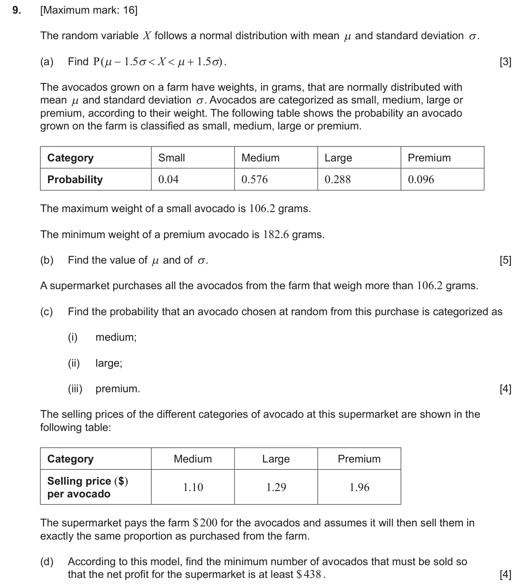
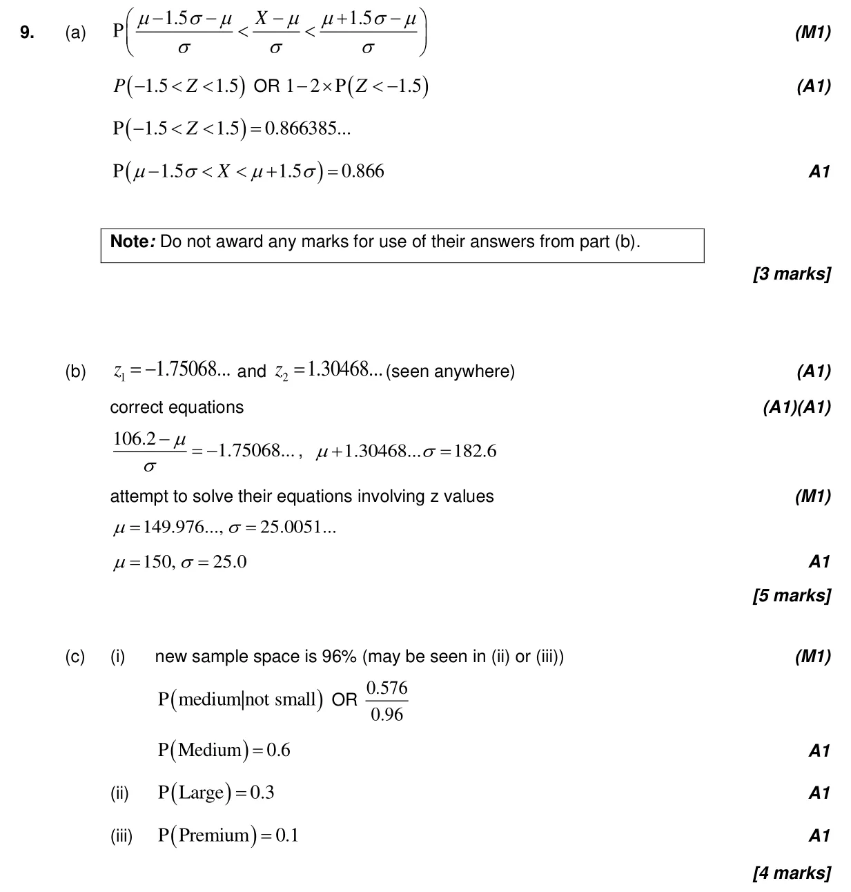
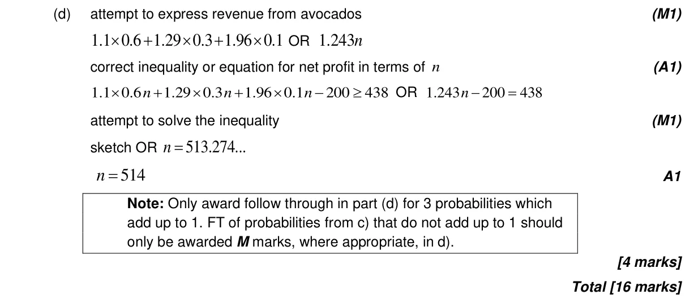

16 marks P2 TZ0 Section B Calculator 4.12 Standardization of normal variables4.11 Formal conditional probability and independence4.7 Discrete random variables4.9 Normal distribution and calculations Question Hide breakdown abcd Markscheme 